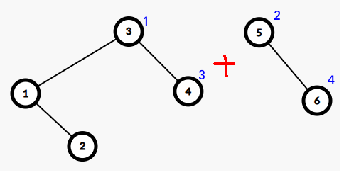

线段树 plus
概览
定义：BST，且对于任意点，其左右子树树高差不超过 \(1\)，这样所有 \(O(h)\) 复杂度的 BST 操作都能在 \(O(\log n)\) 内解决。
维护值：
__gnu_pbds::tree<>/ 权值线段树需要意识到线段树就是 leafy 的平衡树，且是静态的，不支持对树结构的操作；
这也是为什么树上的 GBT 总是可以用线段树代替 BST 做 DDP，因为树是静态的，重链也是静态的，不可能有结构变化的需求。但序列上的 DDP 不一定是静态的，比如 密码箱 就只能用平衡树做。维护序列：fhq treap
例：普通平衡树
https://www.luogu.com.cn/problem/P3369
pbds / 权值线段树。
FHQ Treap
把 Treap 的旋转操作改成了好想好写的 split 和 merge，其余不变；额外带来了维护序列结构的功能。
这里就只探讨维护序列了，维护的是对于序列结构上的操作（也可以维护值的操作，方式和线段树类似），这里的点值就和线段树维护的值一样，对于操作是没有影响的；点的 id 和对应的下标并没有关系；点的 rank（可以 \(O(1)\) 维护）才对应下标。
自底向上递归处理，考虑到处理 \(4\) 的时候 \(4\) 接了完整的一个 BST，直接把 \(4\) 接到 \(3\) 的右儿子即可。显然是不会影响 priority 的。split：把树在某个值下标处分为两个 Treap。考虑怎么解决这种情况：merge：是为了配合 split 而产生的操作，将树 split 出去并操作后需要 merge 回来。难点在于需要考虑 priority。相似地，考虑这种情况： 从最右边一条链向下走到可以插入的位置（显然是唯一的），将点插入，该处原本的子树和新点的左子树递归合并。蓝色数字是 priority 结构操作（以区间 reverse 为例）：两次 split 得到操作区间的 Treap，打一个懒标记，再合并回去。
类似线段树，递归经过一个点时，如果存在 lazy，就可以交换左右儿子然后下传标记。\(O(n)\) 建树：Treap 是笛卡尔树，然后就可以用悬线或者单调栈建树了。
反过来可以得到在随机数据下笛卡尔树是平衡的，参考 ZJOI2011 小蓝的好友，利用了这个性质。
例：文艺平衡树
https://www.luogu.com.cn/problem/P3391
区间 reverse 乍看会带来可以用线段树做的错觉
实际上考虑一下 reverse 区间有交的情况，就会发现线段树确实做不了，只能真正地去实现 reverse 这个过程，就只有平衡树了能做了。
#include <bits/stdc++.h>
const int maxn = 1e5 + 5;
unsigned pr[maxn];
int lc[maxn], rc[maxn], d[maxn], siz[maxn];
void pushup(int p) {
if (p)
siz[p] = siz[lc[p]] + 1 + siz[rc[p]];
return;
}
void pushdown(int p) {
if (p && d[p]) {
std::swap(lc[p], rc[p]);
d[lc[p]] ^= 1, d[rc[p]] ^= 1;
d[p] = 0;
}
return;
}
void init(int p) {
if (lc[p])
init(lc[p]);
if (rc[p])
init(rc[p]);
pushup(p);
return;
}
int split(int &p, int rk) {
if (!p)
return 0;
pushdown(p);
int q = 0;
if (siz[lc[p]] + 1 == rk)
q = rc[p], rc[p] = 0;
else if (rk <= siz[lc[p]])
q = p, p = lc[p], lc[q] = split(p, rk);
else
q = split(rc[p], rk - siz[lc[p]] - 1);
pushdown(q); // 易错：这里要 pushdown
pushup(p), pushup(q);
return q;
}
void merge(int &p, int q) {
pushdown(p), pushdown(q);
if (!p || !q) {
p += q;
return;
}
if (pr[p] > pr[q])
merge(p, lc[q]), lc[q] = p, p = q;
else
merge(rc[p], q);
pushup(p);
return;
}
int main() {
#ifdef ONLINE_JUDGE
std::ios::sync_with_stdio(false);
std::cin.tie(nullptr), std::cout.tie(nullptr);
#else
std::freopen(".in", "r", stdin);
std::freopen(".out", "w", stdout);
const auto stime = std::chrono::steady_clock::now();
#endif
int n, m;
std::cin >> n >> m;
std::vector<int> l(n + 1), r(n + 1);
std::mt19937 rand(time(nullptr));
for (int i = 1; i <= n; ++i) {
pr[i] = rand();
for (l[i] = i; l[i] != 1 && pr[l[i] - 1] > pr[i]; l[i] = l[l[i] - 1]);
if (l[i] != 1)
rc[l[i] - 1] = i;
}
for (int i = n; i; --i) {
for (r[i] = i; r[i] != n && pr[r[i] + 1] > pr[i]; r[i] = r[r[i] + 1]);
if (r[i] != n)
lc[r[i] + 1] = i;
}
std::function<void(int)> print = [&](int p) {
pushdown(p);
if (lc[p])
print(lc[p]);
std::cout << p << ' ';
if (rc[p])
print(rc[p]);
return;
};
int rt = std::min_element(pr + 1, pr + n + 1) - pr;
init(rt);
for (int l, r, i = 1; i <= m; ++i) {
std::cin >> l >> r;
int rt1 = split(rt, l - 1), rt2 = split(rt1, r - l + 1);
d[rt1] ^= 1;
merge(rt1, rt2), merge(rt, rt1);
}
print(rt), std::cout << '\n';
#ifndef ONLINE_JUDGE
std::cerr << std::fixed << std::setprecision(6) << std::chrono::duration<double> (std::chrono::steady_clock::now() - stime).count() << "s\n";
#endif
return 0;
}习题
有点难，难点不在平衡树
平衡树反而是简单的，只需要发现序列和序列操作就可以了。
C - 密码箱
https://www.luogu.com.cn/problem/P7739
经过思考后，发现比较合理的转化方式是跳过具体数值，直接用对应操作表示函数值。
将数列转化为最终函数值，用矩阵很好操作（右乘）；考虑将操作转化为数值，利用结合律，容易发现只需要把操作对应的矩阵加在末端（前端）即可，这样就可以只用操作来表示函数值。
要做的话最好只让矩阵维护最后一项，W 显然，E 的第二种亦显然（加两个矩阵），考虑乘起来方便维护，乘起来之后发现和 E 的第一种是等价的，平衡树维护四个矩阵即可。
#include <bits/stdc++.h>
const int maxn = 2e5 + 5;
const int mod = 998244353;
using ll = long long;
struct mat {
ll a[2][2];
ll* operator[] (const int q) {
return a[q];
}
bool operator== (mat &q) const {
return a[0][0] == q[0][0] && a[0][1] == q[0][1] && a[1][0] == q[1][0] && a[1][1] == q[1][1];
}
mat operator* (mat &q) const {
mat res;
res[0][0] = (a[0][0] * q[0][0] + a[0][1] * q[1][0]) % mod;
res[0][1] = (a[0][0] * q[0][1] + a[0][1] * q[1][1]) % mod;
res[1][0] = (a[1][0] * q[0][0] + a[1][1] * q[1][0]) % mod;
res[1][1] = (a[1][0] * q[0][1] + a[1][1] * q[1][1]) % mod;
return res;
}
} u[maxn][2], s[maxn][4], W, E, A, B, C;
unsigned pr[maxn];
int siz[maxn], d1[maxn], d2[maxn], lc[maxn], rc[maxn];
#define lt lc[p]
#define rt rc[p]
void pushup(int p) {
if (p) {
siz[p] = siz[lc[p]] + 1 + siz[rc[p]];
s[p][0b00] = s[lc[p]][0b00] * u[p][0] * s[rc[p]][0b00];
s[p][0b01] = s[lc[p]][0b01] * u[p][1] * s[rc[p]][0b01];
s[p][0b10] = s[rc[p]][0b10] * u[p][0] * s[lc[p]][0b10];
s[p][0b11] = s[rc[p]][0b11] * u[p][1] * s[lc[p]][0b11];
}
return;
}
void pushdown(int p) {
if (p && d1[p]) {
d1[lt] ^= 1, d1[rt] ^= 1;
std::swap(u[lt][0], u[lt][1]);
std::swap(s[lt][0b00], s[lt][0b01]);
std::swap(s[lt][0b10], s[lt][0b11]);
std::swap(u[rt][0], u[rt][1]);
std::swap(s[rt][0b00], s[rt][0b01]);
std::swap(s[rt][0b10], s[rt][0b11]);
d1[p] = 0;
}
if (p && d2[p]) {
d2[lt] ^= 1, d2[rt] ^= 1;
std::swap(lc[lt], rc[lt]);
std::swap(s[lt][0b00], s[lt][0b10]);
std::swap(s[lt][0b01], s[lt][0b11]);
std::swap(lc[rt], rc[rt]);
std::swap(s[rt][0b00], s[rt][0b10]);
std::swap(s[rt][0b01], s[rt][0b11]);
d2[p] = 0;
}
return;
}
int split(int &p, int rk) {
if (!p)
return 0;
pushdown(p);
int q = 0;
if (siz[lc[p]] + 1 == rk)
q = rc[p], rc[p] = 0;
else if (rk <= siz[lc[p]])
q = p, p = lc[p], lc[q] = split(p, rk);
else
q = split(rc[p], rk - siz[lc[p]] - 1);
pushdown(q);
pushup(p), pushup(q);
return q;
}
void merge(int &p, int q) {
if (!p || !q) {
p += q;
return;
}
pushdown(p), pushdown(q);
if (pr[p] > pr[q])
merge(p, lc[q]), lc[q] = p, p = q;
else
merge(rc[p], q);
pushup(p);
return;
}
void init(int p) {
if (lc[p])
init(lc[p]);
if (rc[p])
init(rc[p]);
pushup(p);
return;
}
#undef lt
#undef rt
int main() {
#ifdef ONLINE_JUDGE
std::ios::sync_with_stdio(false);
std::cin.tie(nullptr), std::cout.tie(nullptr);
#else
std::freopen("code3.in", "r", stdin);
std::freopen(".out", "w", stdout);
const auto stime = std::chrono::steady_clock::now();
#endif
s[0][0][0][0] = s[0][0][1][1] = s[0][1][0][0] = s[0][1][1][1] = s[0][2][0][0] = s[0][2][1][1] = s[0][3][0][0] = s[0][3][1][1] = 1ll;
W[0][0] = W[0][1] = W[1][1] = 1ll;
E[0][1] = mod - 1ll, E[1][0] = 1ll, E[1][1] = 2ll;
A[0][1] = A[1][0] = 1ll, B[0][1] = B[1][0] = B[1][1] = 1ll;
int n, q, rt;
std::cin >> n >> q;
std::mt19937 rand(time(nullptr));
for (int i = 1; i <= n + q; ++i)
pr[i] = rand();
std::vector<char> a(n + 1);
for (int i = 1; i <= n; ++i) {
std::cin >> a[i];
if (a[i] == 'W')
u[i][0] = W, u[i][1] = E;
else
u[i][0] = E, u[i][1] = W;
}
{
std::vector<int> l(n + 1), r(n + 1);
for (int i = 1; i <= n; ++i) {
for (l[i] = i; l[i] != 1 && pr[l[i] - 1] > pr[i]; l[i] = l[l[i] - 1]);
if (l[i] != 1)
rc[l[i] - 1] = i;
}
for (int i = n; i; --i) {
for (r[i] = i; r[i] != n && pr[r[i] + 1] > pr[i]; r[i] = r[r[i] + 1]);
if (r[i] != n)
lc[r[i] + 1] = i;
}
rt = std::min_element(pr + 1, pr + n + 1) - pr;
init(rt);
}
auto print = [&](int rt) {
auto res = A * B * s[rt][0];
ll p = res[0][1], q = res[1][1];
std::cout << q << ' ' << p << '\n';
return;
};
print(rt);
for (std::string op; q--; ) {
std::cin >> op;
if (op == "APPEND") {
char t;
std::cin >> t, ++n;
if (t == 'W')
u[n][0] = W, u[n][1] = E;
else
u[n][0] = E, u[n][1] = W;
pushup(n), merge(rt, n);
}
else if (op == "FLIP") {
int l, r;
std::cin >> l >> r;
int rt1 = split(rt, l - 1), rt2 = split(rt1, r - l + 1);
d1[rt1] ^= 1;
std::swap(u[rt1][0], u[rt1][1]);
std::swap(s[rt1][0b00], s[rt1][0b01]);
std::swap(s[rt1][0b10], s[rt1][0b11]);
merge(rt1, rt2), merge(rt, rt1);
}
else {
int l, r;
std::cin >> l >> r;
int rt1 = split(rt, l - 1), rt2 = split(rt1, r - l + 1);
d2[rt1] ^= 1;
std::swap(lc[rt1], rc[rt1]);
std::swap(s[rt1][0b00], s[rt1][0b10]);
std::swap(s[rt1][0b01], s[rt1][0b11]);
merge(rt1, rt2), merge(rt, rt1);
}
print(rt);
}
#ifndef ONLINE_JUDGE
std::cerr << std::fixed << std::setprecision(6) << std::chrono::duration<double> (std::chrono::steady_clock::now() - stime).count() << "s\n";
#endif
return 0;
}A - Bridge
https://www.luogu.com.cn/problem/P9358
如果把桥视作元素，假设对于下面的情形：
容易发现如果 \(b\) 不存在，那么 \(y\) 和 \(x\) 的后继都是 \(a\)，但只保留 \(y\to a\) 的路径是不劣的
如果 \(b\) 存在，就要连 \(b\) 和 \(x\)，也就说每个点连到当前行和下一行中最近的后继点就可以了，每个点只对应两条边，最后会形成若干个链，看成序列就可以用平衡树维护。查询跳到树顶再跳到最右的儿子就可以了，复杂度 \(O(\log n)\)。连边则可以直接用 set 维护。